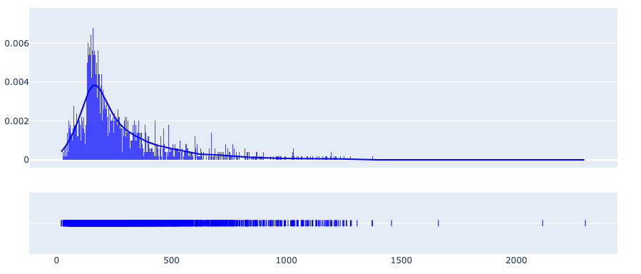
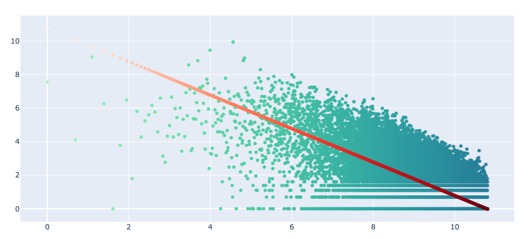

Text Stats
Wordview provides an overview of your text data, as well as general statistics and different
distributions and plots via TextStatsPlots class. To get started, import and
instantiate an object of TextStatsPlots using your dataset:
Overview
Use the show_stats method to see a set of different statistics about
of your dataset.
ta.show_stats()
┌───────────────────┬─────────┐
│ Language/s │ EN │
├───────────────────┼─────────┤
│ Unique Words │ 48,791 │
├───────────────────┼─────────┤
│ All Words │ 666,898 │
├───────────────────┼─────────┤
│ Documents │ 5,000 │
├───────────────────┼─────────┤
│ Median Doc Length │ 211.0 │
├───────────────────┼─────────┤
│ Nouns │ 28,482 │
├───────────────────┼─────────┤
│ Adjectives │ 19,519 │
├───────────────────┼─────────┤
│ Verbs │ 15,241 │
└───────────────────┴─────────┘
Distributions
You can look into different distributions using the show_distplot
method. For instance, you can see the distribution of document lengths
to decide on a sequence length in sequence models with a fixed input or
when you carry out mini-batch training.
ta.show_distplot(plot='doc_len')

Or, you can see the Zipf distribution of words:
ta.show_distplot(plot='word_frequency_zipf')

See this excellent article to learn how Zipf’s law can be used to improve some NLP models.